Explore Yogyakarta
A Brief History
Yogyakarta is a special region ruled by the Sultan of Ngayogyakarta Hadiningrat since the 18th century and a centre of Javanese court culture. The kraton palace, Taman Sari water castle, and Malioboro street markets preserve gamelan, batik, and wayang traditions. As a hub near Borobudur and Prambanan, the city links Mataram-era Hindu-Buddhist monuments with Indonesia's republican history.
Attractions Map
Top Sights & Activities
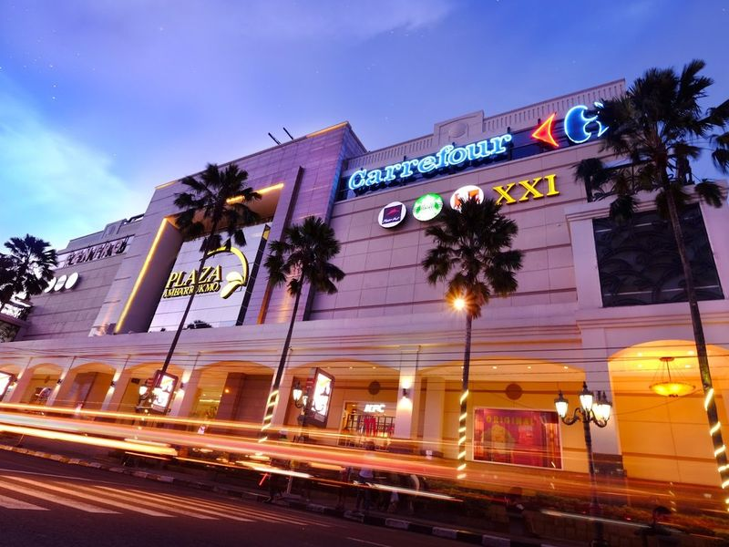
Ambarrukmo Plaza
Ambarrukmo Plaza, established in 2006, is a seven-floor shopping destination in Yogyakarta. It houses over 230 international and local brands, offering a wide range of shopping options. The mall features an impressive dining selection, a supermarket, and a cinema. Visitors can explore showrooms and shops with various products. Despite its size, the mall is well-maintained and offers almost everything one might need – from food to clothing to entertainment.
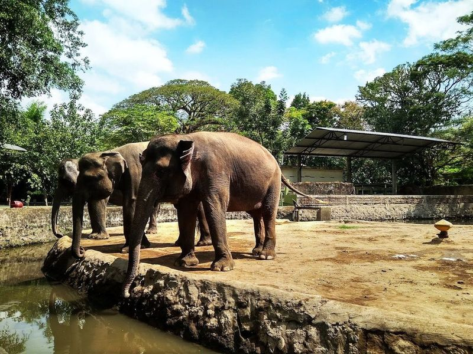
Gembira Loka Zoo
Gembira Loka Zoo, located just 20 minutes outside Yogyakarta's city center, has been welcoming visitors since 1956. Spanning 54 acres, the zoo offers a diverse range of animals from Indonesia and around the world. Visitors can interact with some animals through touch pools and feedings, as well as enjoy elephant and camel rides.
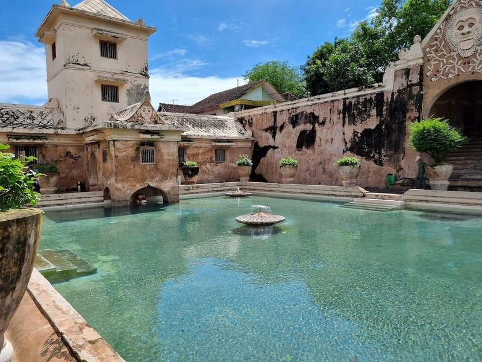
Taman Sari Tourist Village
Taman Sari, also known as the Taman Sari Water Castle, is a historical site located in Yogyakarta, Indonesia. Built in the 18th century by Sultan Hamengkubuwono, it served as a royal garden and retreat for the Sultan of Yogyakarta. The complex features ornate bathing pools, pavilions, and waterways designed for relaxation and meditation.
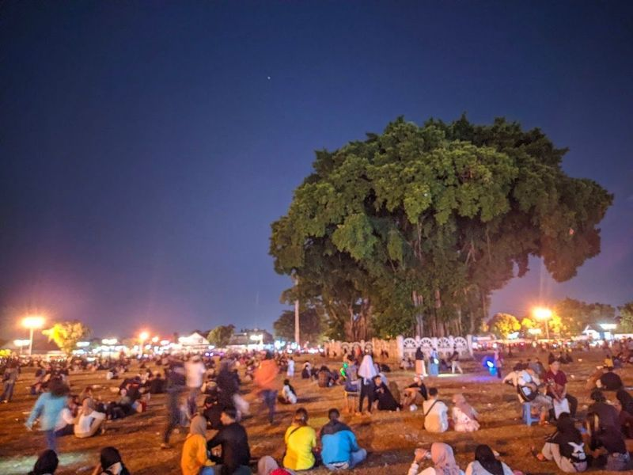
Kidul Plaza Yogyakarta
Alun-Alun Kidul Yogyakarta is a vibrant plaza known for its lively nightlife and local culture. It's situated in front of the Kraton (Royal Palace) and comes alive with activity, especially at sunset when food stalls are set up. Visitors can enjoy unique experiences like renting neon-lit go-karts or riding bicycle-cars, which are not commonly found in typical Indonesian tourist attractions.
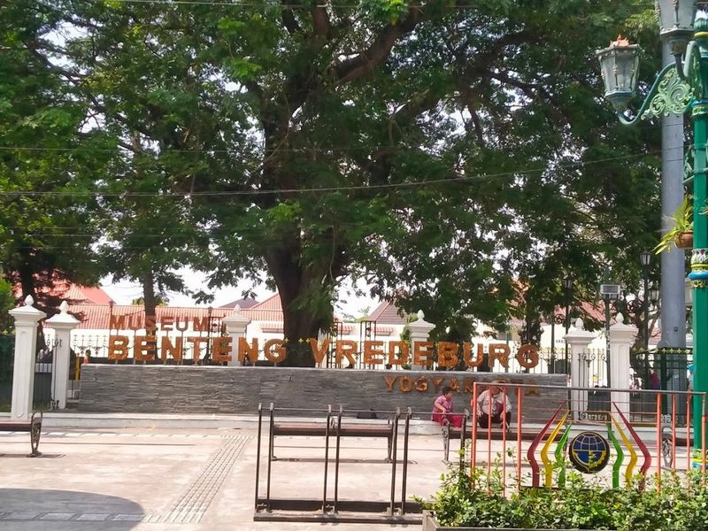
Beringharjo Traditional Market
Beringharjo Market, a historic marketplace dating back to 1758, is a attraction in Yogyakarta. Located in the Malioboro area on Jalan Pabringan, this traditional market offers a wide array of goods including clothing, souvenirs, and Indonesian delicacies. Visitors can explore the market's stalls selling traditional batiks at reasonable prices and immerse themselves in the fragrances of Javanese herbs.
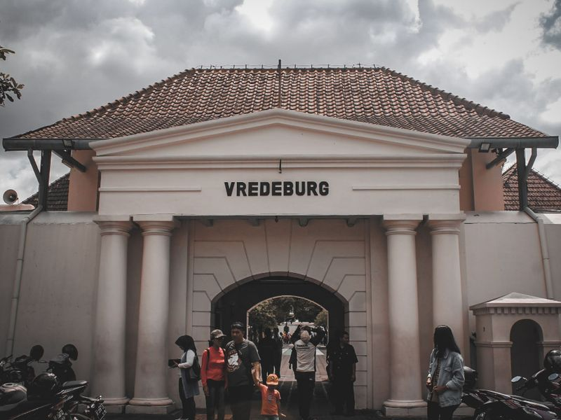
Vredeburg Fort Museum
Vredeburg Museum, a former colonial fortress turned museum, offers a deep dive into Indonesia's struggle for independence. The well-preserved fort stands as an important historical monument and showcases exhibits on the country's fight against Dutch and Japanese aggressors. Visitors can explore the actual fort building and immerse themselves in dioramas depicting this pivotal era.
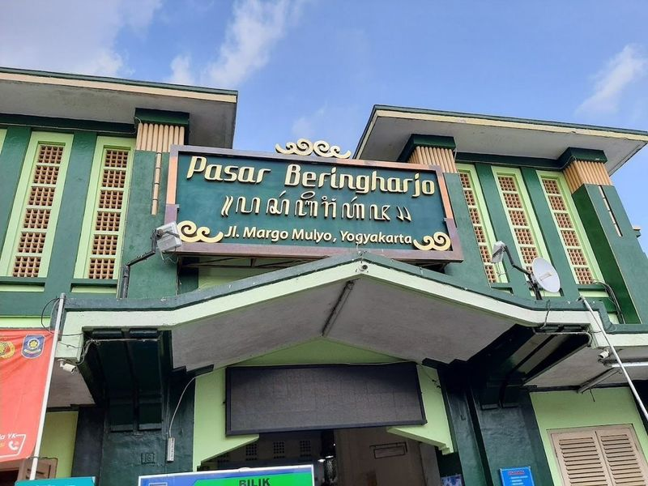
Pasar Beringharjo Yogyakarta
Pasar Beringharjo in Yogyakarta is a bustling traditional market located on Jalan Malioboro. It's the perfect place to find affordable souvenirs, local goods, clothes, batiks, textiles, bags, and traditional Javanese dance costumes. The market also features a friendly local herb shop where buy herbs for wedang uwuh and other herbal drinks. Additionally, there's a handicraft store offering unique items at fair prices.
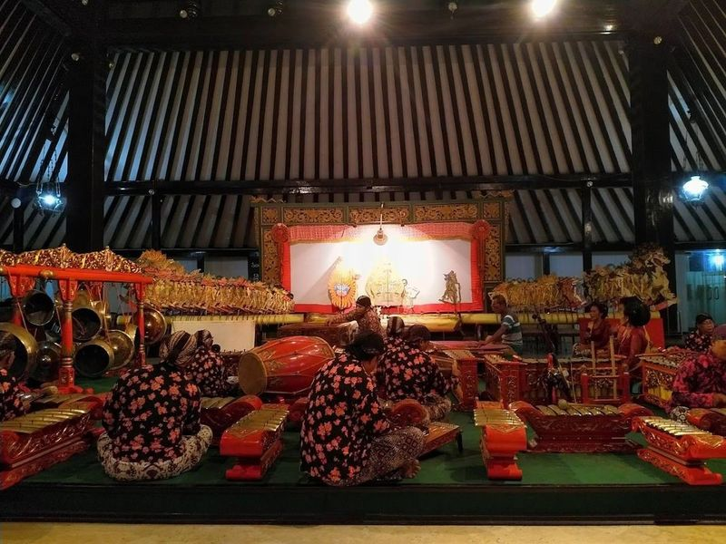
Museum Sonobudoyo Unit I
Museum Sonobudoyo Unit I is a must-visit Indonesian cultural-history museum located in Yogyakarta. It showcases a wide array of artifacts including masks, weapons, batik, music instruments, and puppets from Javanese and Balinese culture. Visitors can also witness a special leather puppet show accompanied by traditional Javanese Gamelan music and language every evening.
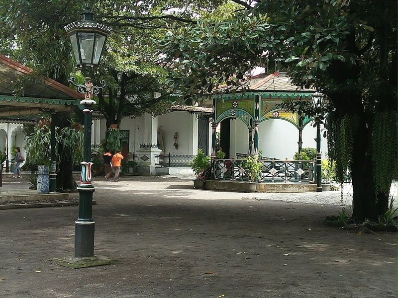
Keraton Ngayogyakarta Hadiningrat
Keraton Ngayogyakarta Hadiningrat, also known as the Yogyakarta Palace, is a magnificent royal complex in the heart of Yogyakarta, Indonesia. Built in the 18th century and still used by Indonesian royalty, it offers a fascinating insight into Javanese culture and heritage. The palace features traditional Javanese architecture with intricate carvings and expansive courtyards.
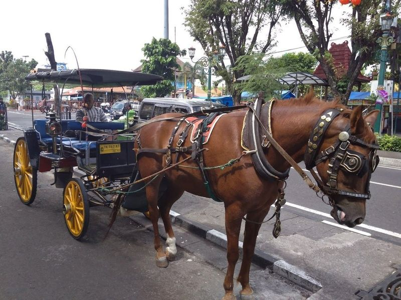
Jl. Malioboro
Jl. Malioboro is a bustling shopping hub in Jogja, offering sidewalk stalls, open-air restaurants, and a vibrant atmosphere with musicians and artists. Visitors can explore batik shops, indulge in local street food like gudeg, and visit cultural sites such as the Sultan's Palace and the water palace. Getting around on foot or by becak allows for easy exploration of these attractions.
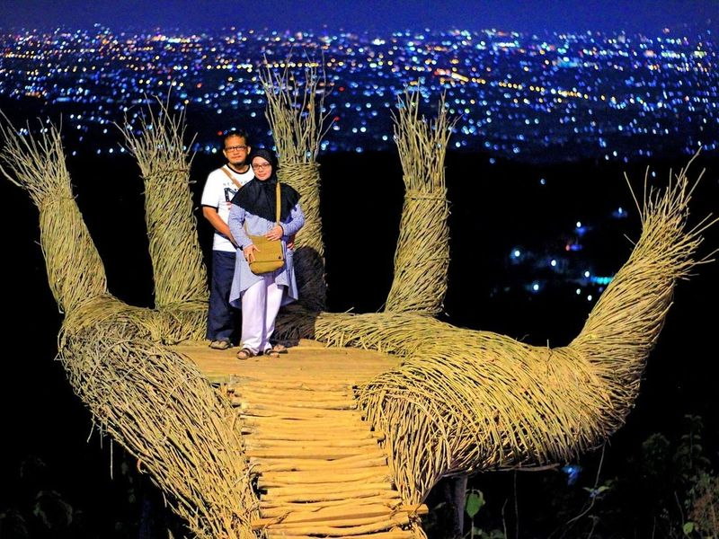
Hutan Pinus Pengger
Hutan Pinus Pengger is a transformed pine forest turned into an open-air attraction with various photo spots sculpted from natural materials. It offers a cool atmosphere and sufficient facilities, making it suitable for family visits. While less popular than other tourist destinations in Yogyakarta, it provides an interesting alternative with its unique photo opportunities and views of the city lights at night.
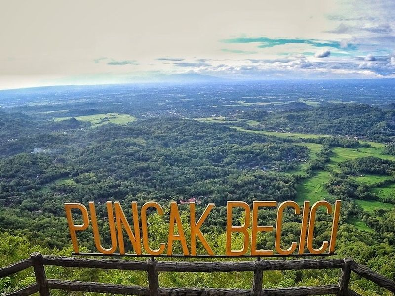
Becici Peak
Becici Peak, located in Yogyakarta, is a forested area with mountain, valley, and town views. Visitors can enjoy sit-on sculptures for photo opportunities and partake in outbound activities like ziplining for an affordable price. The peak gained attention after a visit from former President Barack Obama in 2017. It's a large pine park offering family recreation and camping options with various photo platforms to capture the beautiful night view of the lights below.
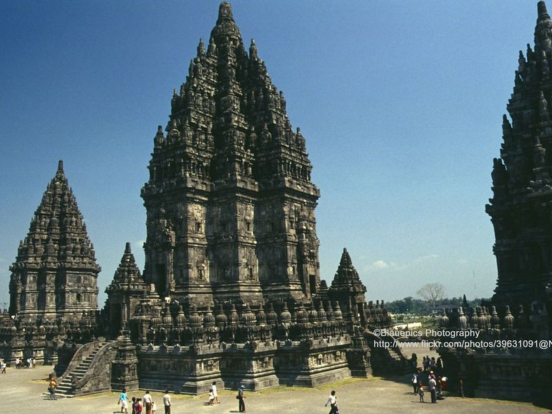
Prambanan Temple
Prambanan Temple is a 9th-century Hindu temple complex dedicated to the Trimurti, located just outside Yogyakarta. It is renowned for its tall and pointed architecture, and intricate stone carvings that illustrate Ramayana epics across restored and original stone shrines.
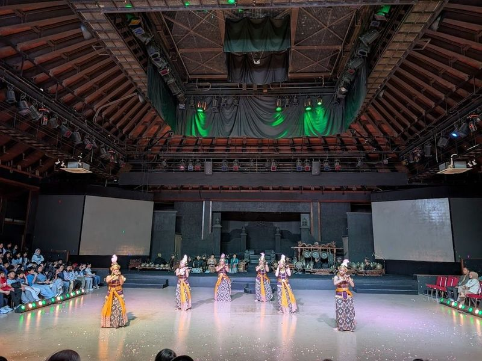
Ramayana Ballet Prambanan
Ramayana Ballet Prambanan is a popular attraction that presents a show near the Prambanan Temple, featuring a combination of dance and drama based on the Ramayana story. The performance showcases the traditional legend of Roro Jonggrang through dramatic movements and theatrical arrangements. The show lasts for about an hour and offers both classic and modern elements. Ticket prices are reasonable, with different seating options available.
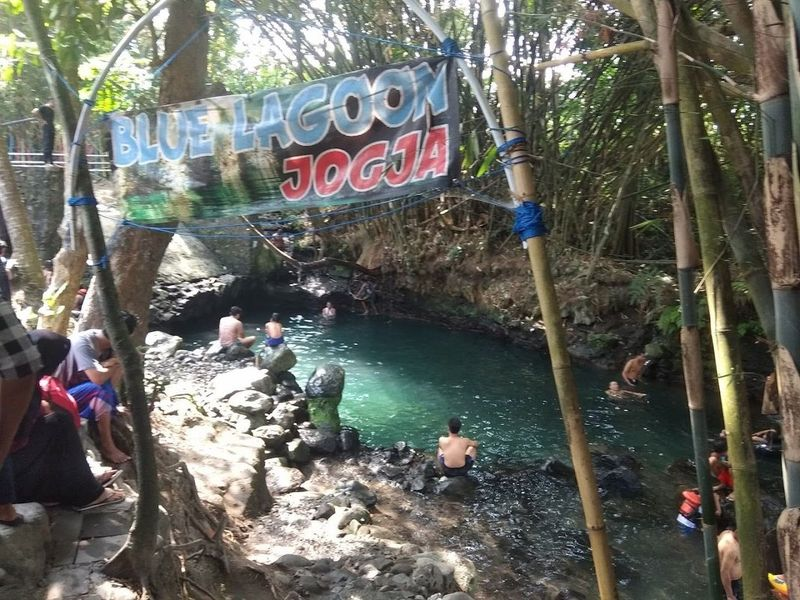
Blue Lagoon Jogja
Blue Lagoon Jogja is a popular tourist attraction comprising of a natural spring-fed pool surrounded by trees and boulders. The facility is well-maintained and offers clear, cold freshwater in a comfortable environment. Entry to the attraction costs 10k which includes a complimentary drink available from various food shops on the premises. It is an ideal resting spot for bikers in the area and is looked after by locals.
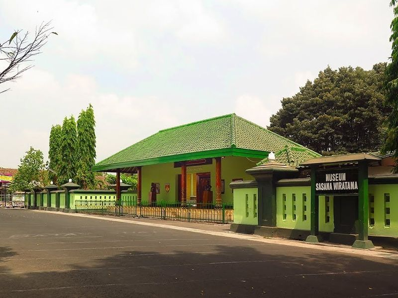
Sasana Wiratama Diponegoro Museum
Sasana Wiratama Museum is situated in the heart of Yogyakarta city, at the Tegalrejo area. This historical building holds significance as it was once inhabited by Pangeran Diponegoro, a revered Indonesian hero. The Pendopo design of the building provides a spacious venue for various events such as wedding parties and meetings. It also features gamelan instruments, eliminating the need for outside equipment for karawitan groups.
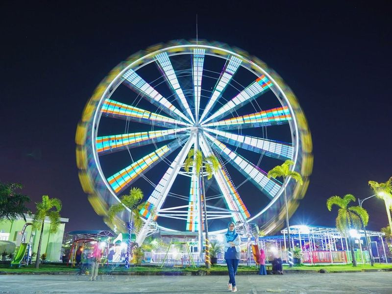
SKE CITY PARK
Sindu Kusuma Edupark (SKE) is an entertainment destination that caters to both kids and adults. It boasts a variety of rides, such as a large observation wheel, ziplines, and Segways. Located in Yogya, SKE is considered a hidden theme park perfect for hanging out with family or friends. purchase tickets on Traveloka or on-site.
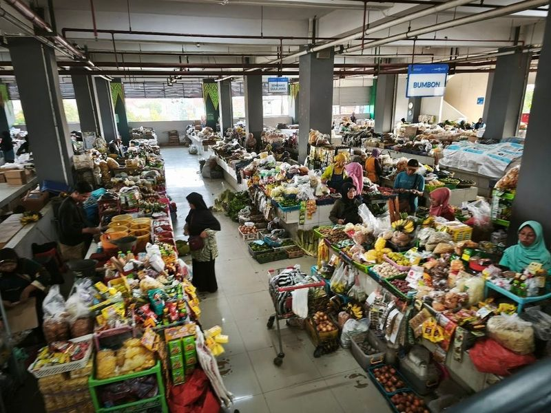
Prawirotaman Traditional Market
Prawirotaman Traditional Market is a bustling local market where find an array of fresh produce, traditional snacks, and household items. Located in a tourist area, it offers a variety of goods including jamu, vegetables, meat, chicken, and tempe. The market also features a food court on the fourth floor with plenty of food choices at reasonable prices.